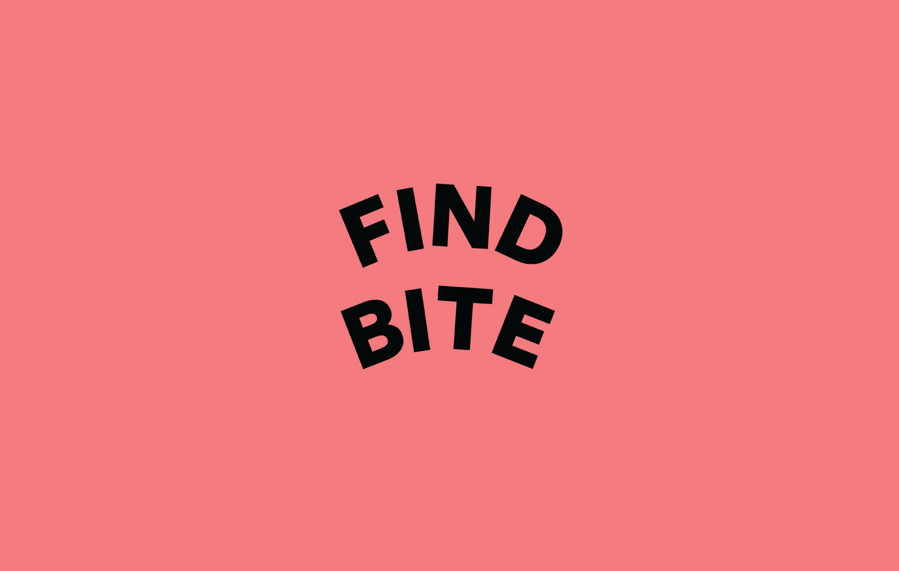
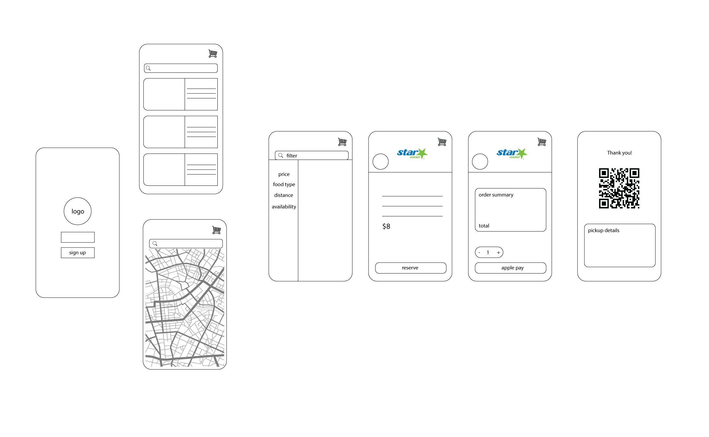
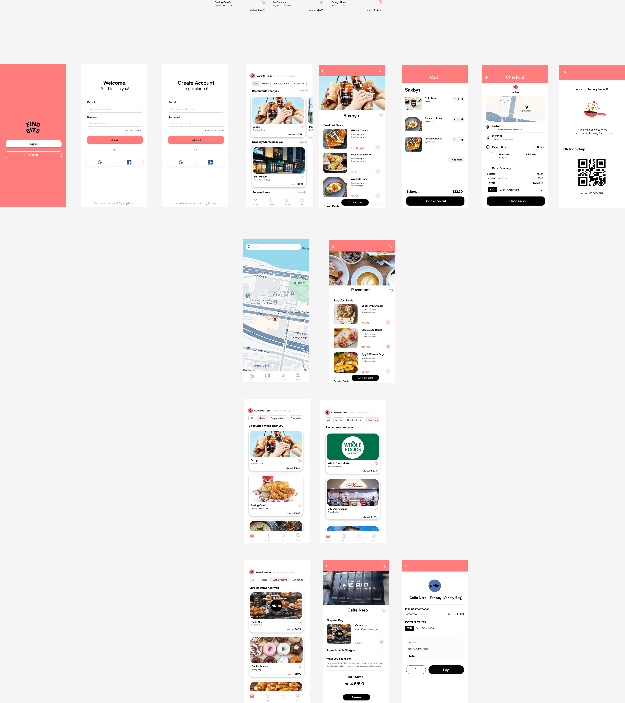

Find Bite
Find Bite is a UX design case study of an application that helps users find discounted food and groceries nearby. The interface is designed to be intuitive and user-friendly, with features like filtering by food type, map-based navigation, and deal tracking to support budget-conscious users.

The Problem
Finding affordable, decent-quality food is challenging — especially for college students. Many rely on delivery apps that add fees, defeating the purpose of saving money. Meanwhile, stores often sell unsold items at a discount near closing time, but there's no easy way to find these deals. Find Bite bridges that gap.

Research
I observed how college students manage food expenses and conducted user interviews about their frustrations and strategies for finding cheap food.
Common pain points
- No reliable way to find deals in one place
- Delivery app fees cancel out any savings
- Unaware of end-of-day restaurant discounts

User Personas
- A college student with a limited food budget who wants daily access to nearby deals
- A sustainability-minded user who wants to reduce food waste

Design
Starting from wireframes, I prioritized simplicity and intuitive navigation. The home page uses cards for quick scanning; a map view lets users browse deals geographically.


Prototype